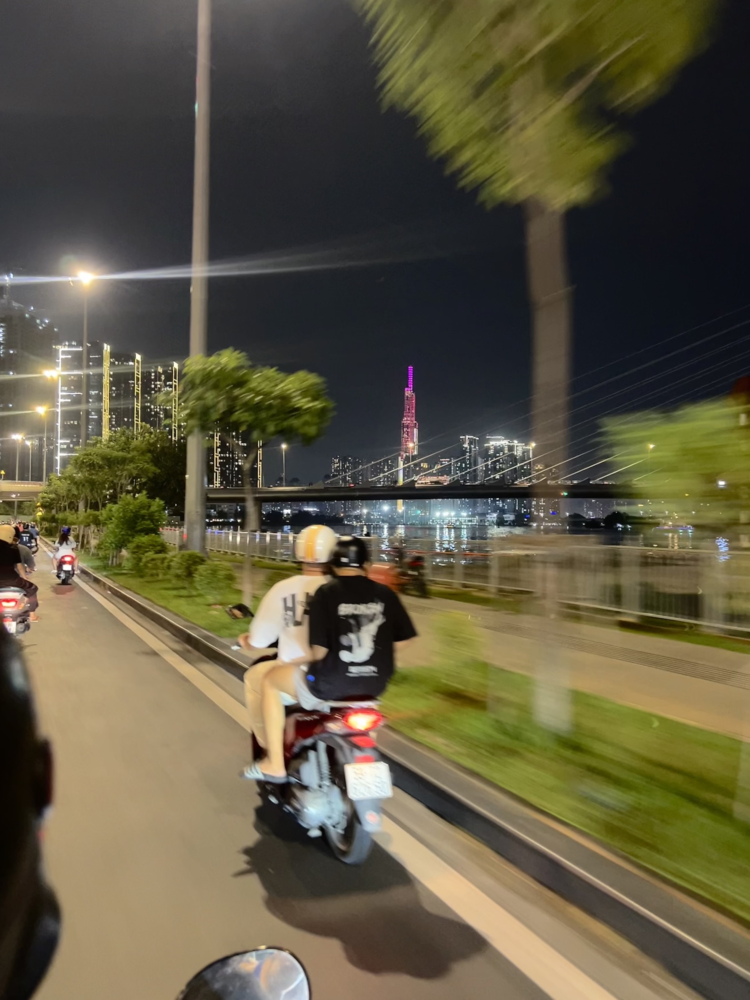
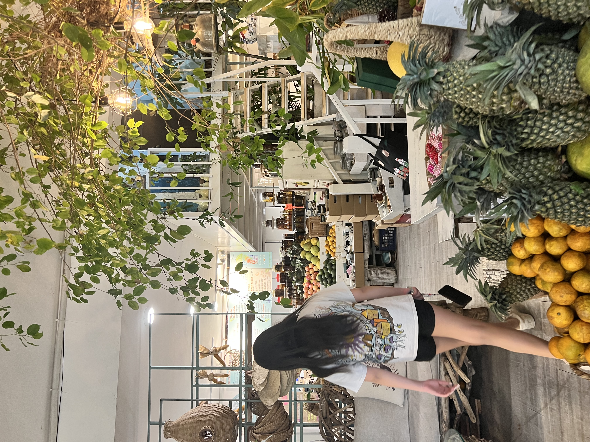
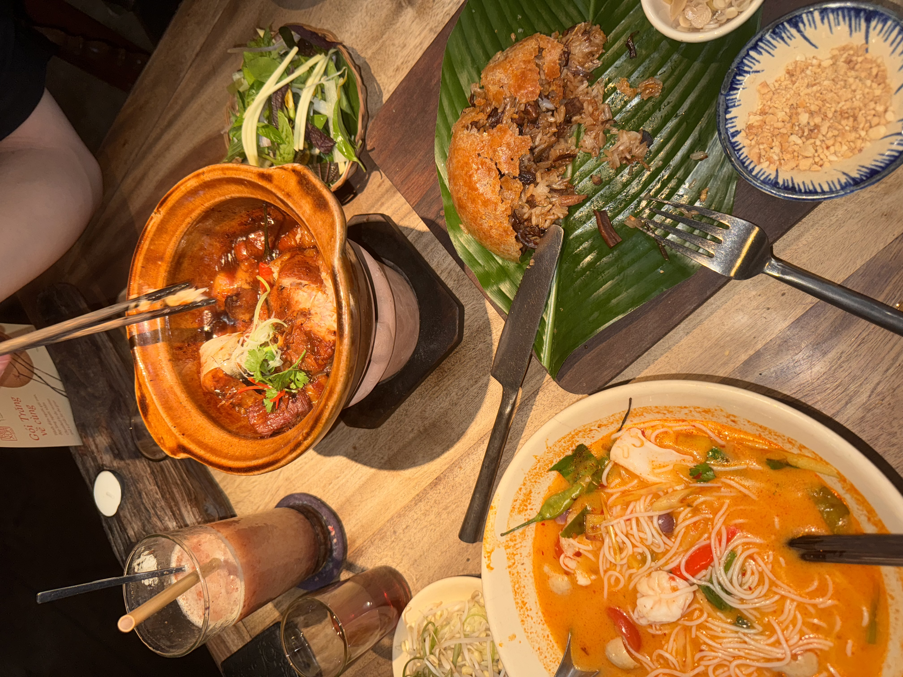
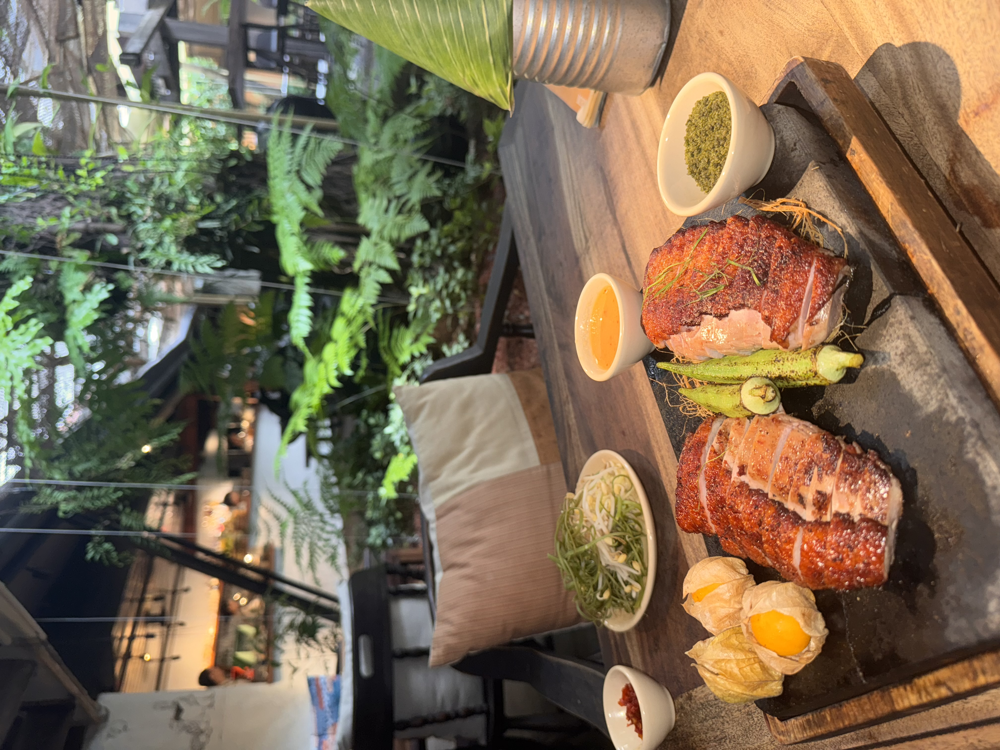
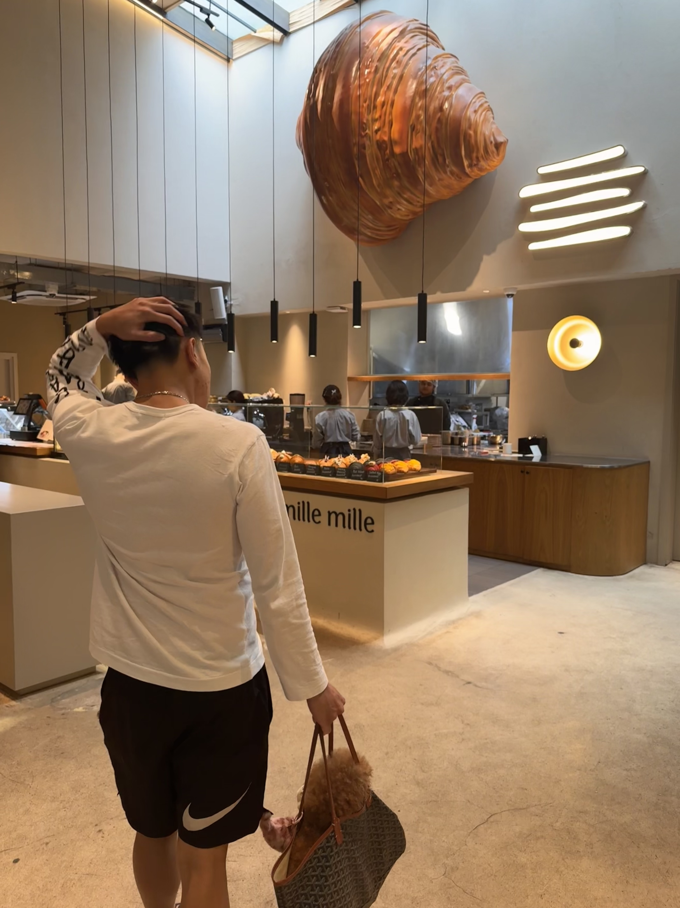
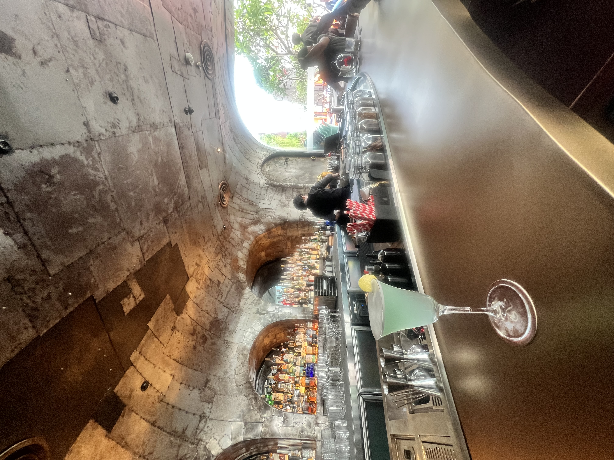
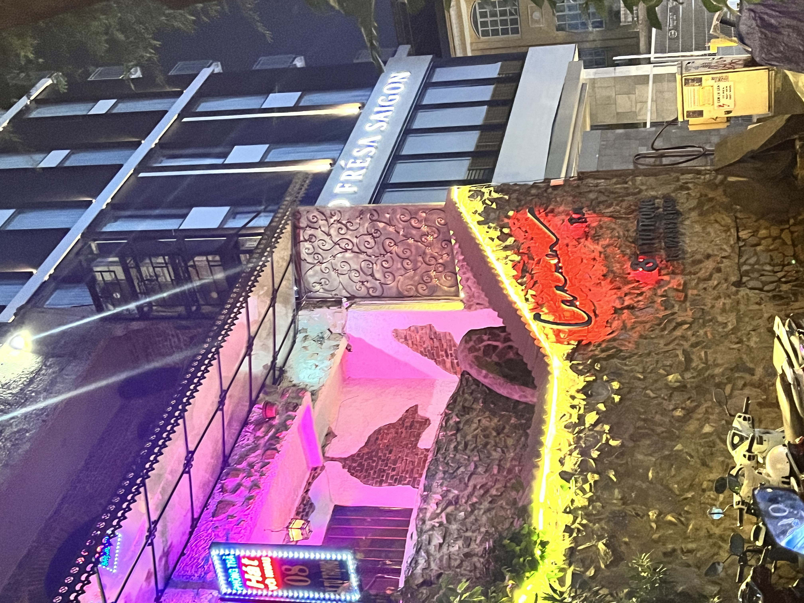

Ho Chi Minh City Travel Guide
Ho Chi Minh City—or Saigon, as many locals still call it—is faster, newer, and more modern than Hanoi. The energy here is different: less ancient temple charm, more capitalist hustle. But the food is just as good, the people are friendlier, and the heat is relentless year-round.
I prefer Hanoi's character, but HCMC has its own appeal. The city is easy to navigate, the cafe scene is thriving, and you're close to the Mekong Delta and Cu Chi Tunnels. Give yourself 2-3 days for the city itself, longer if you're using it as a base for day trips.
Where to Stay in Ho Chi Minh City
District 1 is where most travelers stay. It's the colonial heart of the city with the main sights, restaurants, and nightlife.
District 1 (Central) – around Dong Khoi Street and Ben Thanh Market. You're walking distance to most attractions. It's busy but convenient. This is where I stay for short trips.
District 3 – just north of District 1. More residential with cafes and local restaurants. Still central but quieter. Good for longer stays.
District 2 (Thao Dien) – expat neighborhood across the river. Trendy cafes, Western restaurants, boutique hotels. You'll need Grab to get to District 1, but it's a nice escape. Stay here if you want a break from typical Southeast Asia travel.
District 1 (Bui Vien) – backpacker street with cheap hostels, bars, and constant noise. Only stay here if you're 22 and want to party.
Budget – hostels start at $5-10, mid-range hotels in District 1 cost $30-50.


Where to Eat
Southern Vietnamese food is sweeter than northern food, with more fresh herbs and different noodle soups. The street food is excellent and the cafe culture is next level.
Must-try dishes – banh xeo (crispy crepe), hu tieu (southern noodle soup), com tam (broken rice with grilled pork), goi cuon (fresh spring rolls), and Vietnamese coffee.
Street food – Lunch Lady has different soup specials each day. Ben Thanh Street Food Market (the outdoor one near the main market) has everything. Banh Mi Huynh Hoa for the most famous banh mi in the city—expect a line.
Manmoi – I'm obsessed with this place. It's a tiny restaurant serving creative Vietnamese food that actually tastes Vietnamese (unlike a lot of fusion places). The beef wrapped in betel leaf and the squid ink dumplings are incredible. Book ahead.
Cafes – the cafe scene here rivals Bangkok. The Workshop has multiple locations with great coffee. Shin Coffee in District 3 is beautiful. L'Usine combines cafe, restaurant, and boutique.
Rooftop bars – Saigon Saigon Bar at the Caravelle Hotel has classic views. Social Club is newer with a pool. Go at sunset.
Fine dining – Noir serves Vietnamese tasting menus in the dark, served by blind staff. It's a unique experience.


What to Do
War Remnants Museum – this is heavy but important. The museum documents the Vietnam War (which they call the American War) from the Vietnamese perspective. Graphic photos of Agent Orange effects and the effects of war. Give yourself 2 hours and expect to leave feeling somber.
Cu Chi Tunnels – half-day trip from the city to see the underground tunnel network used during the war. It's interesting but very touristy. You'll crawl through tunnels and can shoot AK-47s if that's your thing. I prefer the Ben Dinh site over Ben Duoc (smaller crowds).
Notre-Dame Cathedral and Central Post Office – French colonial landmarks next to each other. Good for photos. The cathedral is closed for renovation until 2027, but the exterior is still impressive.
Ben Thanh Market – crowded tourist market. Good for souvenirs but prices are inflated. Practice your bargaining. The street food market outside at night is better than shopping inside.
Mekong Delta day trip – floating markets, narrow canals, tropical fruit farms. Book a tour or rent a car and driver. Cai Be and Vinh Long are closer than Cai Rang (the famous floating market near Can Tho).
Walk Dong Khoi Street – the main shopping street from the river to Notre-Dame. It's touristy but has nice architecture, cafes, and people-watching.


A Few of My Favorite Spots
- Manmoi for the best meal in the city
- Nguyen Hue Walking Street at night when it's lit up
- Thao Dien neighborhood for trendy cafes and shops
- Saigon River walk at sunset
- The Bookshelf in Thao Dien for English books and coffee
- Bitexco Financial Tower observation deck for city views
- Street food stalls in District 3
- Rooftop bars at golden hour

Practical Information
Transportation – use Grab for everything. Motorbikes are fastest and cheapest. Regular taxis work too but always use Grab or reputable companies (Vinasun, Mai Linh). The city is too spread out to walk everywhere.
Money – budget $30-50 per day for mid-range travel. ATMs everywhere. Street food costs $1-3, nice meals $10-15, hotels $30-50. USD is widely accepted for tours and hotels.
Best time to visit – December to April is dry season. May to November is wet with afternoon downpours. But honestly, it's hot and humid year-round. The rain isn't that bad—it usually only lasts an hour.
How long to stay – 2-3 days covers the main sights. Add more if you're doing Mekong Delta (overnight trip recommended) or Cu Chi Tunnels.
Language – more English spoken here than Hanoi, especially in District 1 and Thao Dien. Still download Google Translate.
Safety – generally safe but watch for bag snatching from motorbikes. Keep phones and bags secure. Don't leave laptops visible in cafes. Be careful crossing streets—the traffic is insane.
Heat – it's seriously hot. Bring light clothes, sunscreen, and stay hydrated. Duck into air-conditioned cafes regularly.
Hanoi vs HCMC – if you only have time for one, I'd pick Hanoi for culture and history. But HCMC is easier, more modern, and better for first-time Southeast Asia travelers. Do both if you can.